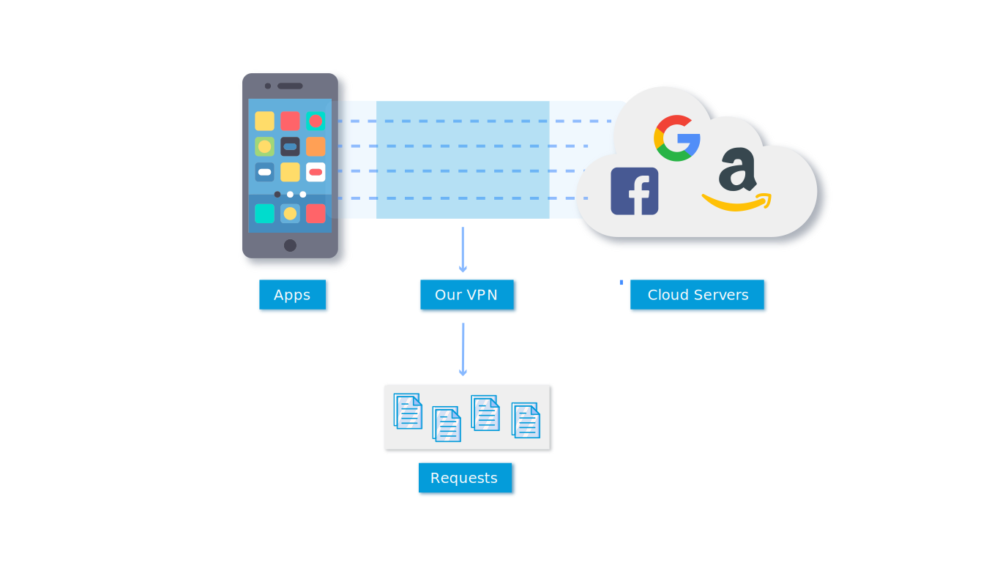
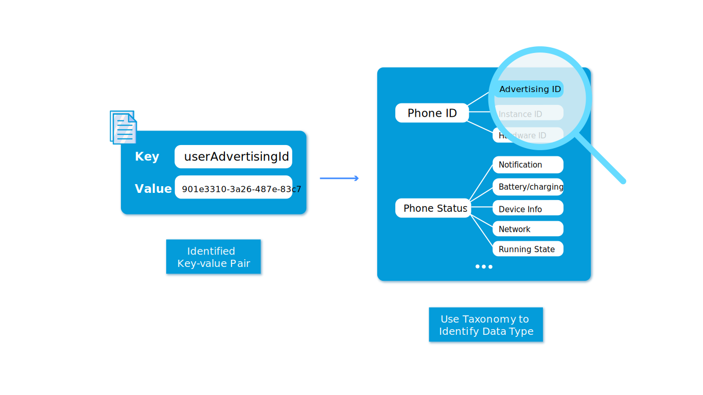
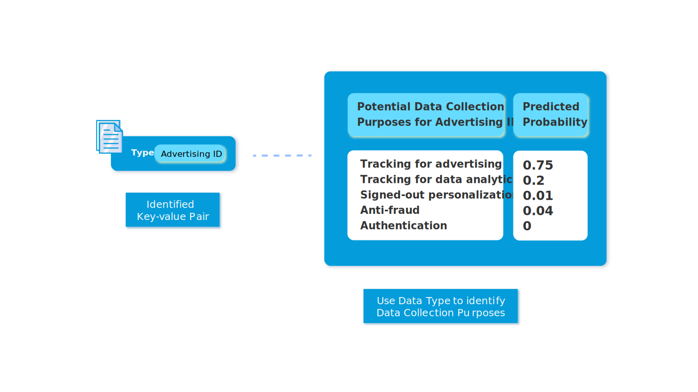

<div class="faq-wrapper">
    <div class="container">
            <h1>FAQs</h1>
            <div class="faq-questions-wrapper">
                <div class="faq-question">
                    <label class="question">What is Android Network Traces ?</label>
                    <p class="answer">
                        Users may see notifcations of apps trying to access their data on a daily basis. 
                        However, it's difficult for users to know <b>what</b> kind of data is being collected by those apps, 
                        and <b>why</b> is the data being collected. <br> 
                        The goal of our application is to educate users about what sort of network activity is being carried out by
                        android apps. We present queryable data visualizations of 'where' and 'why' data is being sent.
                        <br>Learn more about our process <a href="../../assets/mobipurpose_ubicomp.pdf">here</a>.
                    </p>
                </div>
                <div class="faq-question">
                    <label class="question">How did you collect data from apps?</label>
                    <p class="answer">
                        The most common way for smartphone apps to communicate with the cloud servers is HTTP(S) request. 
                        We use VPN to intercept outgoing these HTTP(S) traffic requests and then parse the body of
                        requests into key-value pairs.<br>
                        The entire dataset is now made public. You can find it on 
                        <a href="https://github.com/CMUChimpsLab/mobipurpose" target="_blank">github</a>.
                    </p>
                    
                </div>
                <div class="faq-question">
                    <label class="question">How did you process the collected data for analysis?</label>
                    <p class="answer">
                        Based on the identified data type, we use a supervised machine learning algorithm to predict 
                        the possibility across different candidate purposes. 
                    </p>
                    
                </div>
                <div class="faq-question">
                    <label class="question">How did you predict the data-collection purpose?</label>
                    <p class="answer">
                        Based on the identified data type, we use a supervised machine learning algorithm to predict 
                        the possibility across different candidate purposes. 
                    </p>
                    
                </div>
                <div class="faq-question">
                    <label class="question">Can I know what data are being collected by the apps on my phone?</label>
                    <p class="answer">
                        Currently, the data we collected is not user-specific. However, you can use the search bar on the website 
                        to check for a particular app that you want to learn more about. 
                    </p>
                </div>
                <div class="faq-question">
                    <label class="question">How did you build your taxonomy?</label>
                    <p class="answer">
                        Our mobipurpose taxonomy is built by 10 graduate students at Carnegie Mellon University who have 
                        expertise in data privacy for mobile applications. We first identified a wide range of data-collection
                        purposes from research and examining a large number of android apps. Then, we conducted four card sorting sessions to create and 
                        refine the taxonomy by iteratively merging and categorizing these purposes.
                        <br>The goal of the taxonomy is to communicate to non-experts 
                        (general users) the data collection contexts and help them understand what they should expect.
                    </p>
                </div>
                <div class="faq-question">
                    <label class="question">I cannot find an app here. What do I do ?</label>
                    <p class="answer">
                        place holder 
                    </p>
                </div>
            </div>
    </div>
</div>